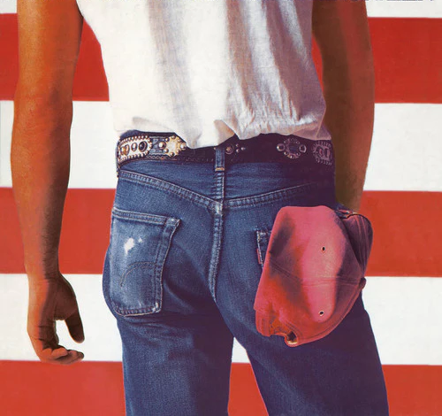

Los pantalones vaqueros AMERICANOS
Desde 1873, la popularidad de los pantalones vaqueros ha ido en aumento. Actualmente,es denominada como tejido vaquero, tela vaquera, tela de jean denim o drill se encuentra en prendas imprencindibles que guardamos en nuestro armario.
Creación de los pantalones vaqueros
Para ello, después de que las máquinas hilanderas conviertan el algodón en hilos, parte del algodón se tiñe de azulado y luego se pega para una mayor durabilidad.
Se utiliza un doblador de balas, luego las pasa en el telar, por chorro o lanzadera, y los otros objetivos van a ser la trama. El hilo de trama se puede mezclar con hilo elástico (2%) para formar un tejido elástico El denim es un tejido de algodón con trama blanca y hilo teñido de azul índigo.Se aplican diferentes tratamientos para obtener el tejido denim en un proceso de 20 días.
Los jeans y la música
Son muchos los iconos de la música que a lo largo de la historia han utilizado pantalones vaqueros.
Desde los años 50, hemos visto como Elvis Presley, Los Beatles, Madonna y Bruce Springsteen han utilizado esta prenda atemporal e informal. Todos ellos han influenciado a otros artistas y a sus fans a utilizar esta prenda.
Tela vaquera en la actualidad
Esta temporada, como en todas las anteriores, la tela vaquera sigue en tendencia.
El tejido vaquero se reinventa y se convierte en uno de los estandartes de las siluetas más sofisticadas, siendo utilizado por los diseñadores de alta costura y mostrado en numerosas paraselas a lo largo del año. Esta tela se impone en abrigos, pantalones, faldas, petos, monos y chaquetas, exhibe su versatilidad en siluetas de talles altos, patrones oversize o prendas ceñidas como los pantalones hiper ajustados.